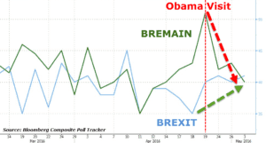

< < < Back
Brexit Vote: Why Britain Should Leave The European Union – Return Of Kings
Let’s provide a little bit of background to those that may be unfamiliar with the situation. On Thursday, June 23, 2016, a referendum known as Brexit will be held to determine whether or not Britain will remain in the European Union.
As for its origins, the EU is an economic and political “agreement” between 28 European countries that was conceived after World War II amidst the destruction and financial devastation that ensued during the post-war years. The idea at the time was to encourage trade among the various member states and discourage going to war with one another given the economic benefits that would result. This logic likewise led to the idea of “free circulation” where goods and people could freely move around without borders while also eliminating the need for visas.
During the 2015 general elections, Prime Minister David Cameron ran under the campaign promise that he would hold a referendum to allow the British people to voice their opinion. This was a result of an ever increasing amount of calls from conservatives to give the country an opportunity to formally weigh in, since the British people have not had a say on the matter since 1975.
Over 40 years have gone by since the last referendum was held, so it’s within reason to assume that the political, social, and economic landscape of Britain has changed somewhat in the last four decades. Although one could pay credence to the notion of establishing the EU in the context of a post World War society, it simply does not benefit Britain to stay in for a number of reasons.
Let’s analyze some of the erroneous arguments that are often spouted from the pro-EU side.
This Won’t Be The First Time A Country Has Left
The exit is this way. Let me show you…
“This has never happened before! It could lead to chaos!”
False. This is probably one of the weakest arguments because it just reverts to a “doomsday” scenario instead of arguing with facts. In actuality, Greenland held a referendum in 1982 and voted 52% to 48% in favor of leaving the EU. After going through the process of exit negotiations, Greenlanders were able to take control of their country’s history and say NO.
A large portion of Greenland’s population relies on the fishing industry for their livelihood. They resented being told by Brussels what they had to do and exactly how much fish they were allowed to take out of their waters. Furthermore, Greenland’s fishing industry improved after its exit according to industry figures.
Britain Will See Job Growth And Savings Of Considerable Money
“Jobs will be lost, and the economy will be damaged!”
False. More than 300 of the country’s biggest business leaders and executives published a letter to the Telegraph last week stating that Brussels’ red tape stifles growth and undermines economic growth. Additionally, they stated that Brexit would enable them to create more jobs.
Lord Farmer, the former head of the Conservative party, lambasted the globalist fear-mongering: “Warnings of disaster if we leave are misguided. Britain, the world’s fifth-biggest economy, should be confident that others will want to trade freely with it especially if, like the EU, they already do so. Europe has a surplus of nearly £70bn with us and no reason to put up barriers.”
A responsible British citizen taking out the trash.
Another area where Britain would see immediate economic savings relates to EU membership fees. That’s right. You didn’t think they called it a “club” just for fun, did you? Britain is one of 10 member states who pays more into the EU budget then they get out of it. Britain currently sends a whopping £350m, the equivalent of 50% of England’s school budget, to Brussels on a weekly basis. That money can easily be put back into the British economy by reinvesting the funds in different industry sectors to stimulate growth and create jobs.
In the long-term, Britain would save billions of pounds in imposed membership fees that are most likely squandered in other areas of the superstate that is fed by the insatiable appetite of the Brussels bureaucratic machine. Some think tanks have even posited that Britain’s GDP could rise by 1.6% in 2030 under the assumption that the UK renegotiates good trade deals with the US, the EU, China, and other major economic powers.
What should come to no surprise to the reader is that the same Telegraph article mentioned above discusses how hundreds of thousands of pounds from foreign companies and America’s biggest banks—such as Citigroup, Goldman Sachs, and Morgan Stanley—were donated to the Remain campaign. Globalists sure love to take care of each other, don’t they?
Stronger Borders And Immigration Regulation
“The EU border policies don’t really affect the UK, since it’s not part of Schengen!”
False. EU law stipulates that Britain must allow EU citizens from other member states to live in the country. As we have unfortunately witnessed over the past few months following the tragic events in Paris and Brussels, the lack of strong border controls within the Eurozone has led to radicalized terrorists easily sliding their way back into the continent after receiving training in Syria.
Although the UK technically isn’t part of the Schengen Agreement, which allows for passport free movement in the EU bloc, the other 26 states that do belong are responsible for vetting those who enter in from non-EU countries. Are we naive enough to believe that every single one of those countries is doing a thorough job at gathering intelligence?
The fact that terrorists Abdeslam and Abaaoud were able to slip back into Belgium the same night of the Paris attacks is proof enough that the EU borders are porous at the very least and flimsy at the very best. The herculean task of keeping tabs on 400 million people throughout a 1.6 million square mile area across these 26 countries has shown to be unreliable. Free movement on such a massive scale simply cannot be controlled effectively. Keep this in mind: one illegal-border hopping into the EU would not in any way prevent someone from illegally continuing to cross into numerous other states without detection.

Not the postcard anyone ever imagines from Paris.
Amidst the continuing migrant debacle, the European Commission has also become more brazen and blatantly hostile with its demands. This tends to be typical of tyrannical rulers realizing that they are losing their grips on power. For example, the EC unveiled plans in May to impose a draconian penalty of €250,000 per rejected migrant that countries refuse to take in. That’s a pretty convenient “deal” if your long-term plan is to flood the European market with tens of millions of refugees that will drastically push down wages in the labor market.
Another laughable move recently came from the European Court of Justice, as it deemed that foreign criminals could avoid being deported from the UK if they were to be placed in overcrowded prisons back home, which would be a “violation of their human rights.” Instead of having these criminals sent back to serve their sentence in their countries of origins, the British tax payer will now have to foot the bill to ensure these thugs are catered to in a cushier penitentiary system.
Let’s also not forget that the European Commission is currently in the process of striking a deal with Turkey to allow for visa-free travel within the EU under the condition that the latter sharply cut the flow of illegal migrants into Greece. Even though the negotiations are at a stalemate over Turkey’s refusal to amend its anti-terror laws, I do believe that Britons should be asking themselves the following question: would it really be in your country’s best interest to remain in the EU pending the very real possibility that a country of 75 million people that borders war torn Syria and Iraq, along with sporadic territory under control of the Islamic State, be granted visa-free travel?
Britons are waking up to who’s really calling the shots.
Conclusion
Brexit is the wake-up call that the rest of the Europe desperately needs. There’s a very real reason that far-right parties are surging all across the continent: people are fed up with pro-globalist economic and migratory policies that do not benefit them or their families. Furthermore, the working class is sick and tired of the political elite dictating and shoving policy down their throat from Brussels. Have a look at how Britons took Obama’s last visit to the UK when he sternly urged them to stay in the EU:

That little pep talk went over really well, didn’t it?
Roughly a month away from the Brexit referendum, the writing is on the wall. A vote for Brexit is a vote for nationalism and sovereignty. Perhaps even more importantly, a vote for the UK exiting the Euro zone would be the spark of confidence in nationalism that will serve as a model to fellow Europeans who are grappling with a migratory invasion of epic proportions, porous border security, and a crippled economy beset by sluggish wage growth.
Read More: Women Should Not Be Allowed To Vote